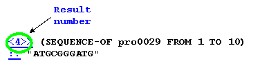
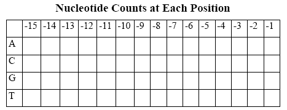

Welcome to BioBIKE's tutorial,
What is a Gene?
Introduction
You may have trouble finding a matching pair of socks in the morning. Well, think about finding a gene amongst the few billion nucleotides that comprise the human genome! In this tour, we'll confront the problem of how to find a gene, which will lead us to the question:
What is a gene anyway?
To answer this question, we have to look at real sequences and real genes. Perhaps some generalities will pop out that enable us to come up with a definition.
In this guide, you are in control of two windows: this Tutorial window, and the Biobike Listener window which led you here. Your goal is to get comfortable using the Listener. To that end, the following demonstrations give you a nice look at some of BioBike's powerful features. Each demonstration has a 'Do It' button, which is a quick way to see each feature in action. Clicking this button is eqivalent to your typing in the expression into the input box of the Listener window and hitting Enter.
Tour Overview
Getting started
We need to be in the "BioBIKE mode" for this tour. Please run the following test:
>> (biobike-mode?)
If NIL is returned, do the following:
>> (biobike-mode)
A. Preliminaries: Genes and gene coordinates
B. What is the beginning of a gene?
C. What determines the beginning of a protein-encoding gene?
D. What is the end of a gene?
- What organisms does BioBIKE know about?
>> *all-organisms*
- Who wants to type those long names? Find out the nicknames of all the organisms by entering:
>> (NICKNAMES-OF *)
- Let's focus on one of the smallest cyanobacteria, Prochlorococcus marinus ss120. A conveniently short nickname of the organism is ss120. What do you get when you simply type in this nickname?
>> ss120
- "Small" is a relative term. How much DNA does ss120 have? Let's see what it's got by asking for the sequence. Enter:
>> (SEQUENCE-OF ss120)
- Perhaps that wasn't very edifying. If we can't see the whole sequence, then let's at least find out how big it is. Enter:
>> (LENGTH-OF ss120)
- That's how big it is. How many genes does it have? Display all of ss120's genes by entering:
>> (GENES-OF ss120)
- Again too many to count! Get a count of the genes by entering:
>> (COUNT-OF *)
Note that the asterisk means that the function should apply to the previous result, in this case the list of genes.
- Let's go back to that list of genes and take a look at one of them more or less at random. I chose Pro0047. Click on the blue link to Pro0047, and take a quick look at the kind of information is available.
- Pro0047 is annotated as a DNA/RNA helicase ... never mind what that is now. Apparently whoever entered this information thinks he/she knows what the gene does (or, more accurately, what kind of protein the gene encodes, since genes by themselves don't do anything). The direction of the gene is B for backwards… so genes can go forwards and backwards. We'll have to examine what that means later. The gene encodes a protein (Encodes-protein is set to True) – what's that all about? Don't all genes encode proteins? The gene extends from coordinate 46600 to coordinate 49788. OK, enough.
- Look at another gene. I chose Pro0029. What do you find for this protein? Not much known about it. Of course there's not much of it to know… look at the coordinates: from 29973 to 30119. Much shorter than the other gene.
- Or is it? Why do the math when the computer can. Ask for the length of the first gene by entering:
>> (LENGTH-OF Pro0047)
- Now get the length of the second gene… actually, we could have done both at once. Let's do that:
>> (LENGTHS-OF (pro0047 pro0029)
Note that when I ask for more than one thing, I put the set of things within parentheses.
- I vote we work with the smaller gene. What does the gene look like? Everything there is to know about it is contained in its sequence, so let's look at its sequence, by entering:
>> (DISPLAY-SEQUENCE-OF Pro0029)
- Where did that sequence come from? The gene frame said the gene goes from coordinates 29973 to 30119. Those are coordinates of the chromosome of ss120. Let's see if that's true. If it is, we should be able to find the same sequence from within the chromosome by entering:
>>(DISPLAY-SEQUENCE-OF (SEQUENCE-OF ss120 FROM 29900 TO 30200))
PROBLEM 1:
If you understand how coordinates work, then you should be able to go to Pro0001, get its coordinates, and find its sequence in the chromosome. Display the beginning of the chromosome by entering:
>>(DISPLAY-SEQUENCE-OF (SEQUENCE-OF ss120 FROM 1 TO 500))
Then using the coordinates you found for Pro0001, find the sequence of the beginning of the gene. To check if you're right, display the sequence of the gene and compare the two sequences.
Maybe you can find the beginning of a gene in a chromosomal sequence, but cells don't have the advantage of a nice coordinate list. How do they do it? How do you find the beginning of thing in a sequence? How did you know where to begin this sentence? How did you know that the beginning of the sentence was the beginning of the sentence? If you examine your internal processes, perhaps you'll come up with two types of strategies:
- Look for an internal cue, i.e. a capital letter. Words with capital letters are candidates to begin sentences.
- Look for an external cue, i.e. punctuation. Words following periods or question marks are candidates to begin sentences.
Perhaps genes have internal or external cues. Let's look.
- You can stare all you want at a single gene, but unless you have prior knowledge (like what the equivalent of a capital letter looks like in DNA sequences), it won't do any good. What we need to do is to look at many genes and see if we find any general features. So let's grab the first, say 10 nucleotides of every gene ss120 has and examine the collection to see if anything pops out. First, let's see how to do this with one gene, then we'll generalize.
Enter:
>> (SEQUENCE-OF pro0029 FROM 1 TO 10)
Does that give you the first 10 nucleotides of the sequence you displayed earlier?
- OK, if it can work with one gene, it can work with all genes. Replace pro0029 with (GENES-OF ss120) and run the command again. You might be offended by using SEQUENCE-OF for multiple genes... it's just not good English. BioBike doesn't care, but if you like, you can use SEQUENCES-OF instead.
- That's more like it! Can you pick out any generalities as to what kind of sequence begins genes? Just as English has more than one capital letter, genes may have more than one initiating element.
- BioBike saves us from generating an overwhelming amount of output. It puts only the first 100 elements of a list on the screen. Note the "..." at the end of the list. How many elements were not listed? (If you don't know the answer, what fact would you need to know to figure out the answer?)
- You've no doubt found a pattern that holds for only the first three nucleotides. Let's focus on them. Revise the command you issued in B.1 and generate a list of the first three nucleotides of each gene in ss120.
- How many times do your putative initiating elements appear in this list? You can find out by entering: (COUNT-OF "ATG" IN (RESULT n))

, where n is the number of the result that gave you the list of triplets. Repeat this with all the triplets you think may be initiating elements.
- Add up all the counts and compare them to the total number of genes. Conclusion?
- Evidently, there are many exceptions to the rule. The greatest insights are often gained by investigating exceptions. Can you identify any gene of ss120 of the first 100 displayed that is one of the exceptions? Presume that the list of triplets goes in the same order as the list of genes. Click on the gene to learn something about it.
- If you found the gene, then take a look at its annotation: It says the gene encodes an RNA! What could that mean? Don't all genes make RNA, which is then translated into protein?
Another thing, the field Encodes-protein does not have the value of True! (NIL is BioBike speak for false). Are there genes that do not encode protein? It's time to call in reinforcements.
Go to Google and type in "signal recognition particle RNA". The first site listed should be SRPDB Welcome. Go there and take a look at the overview
(click on About SRP). Learn something about the SRP cycle – what is it about? What is SRP made of?
- OK, back to business. Evidently the ffs gene does not encode a protein, and it does not begin with one of the usual triplets. Is that true of other genes that don't encode proteins… wait a second. Are there other genes that don't encode proteins, and if so, how many? We need to find out more about ss120. Enter:
>> ss120
and click on the link that appears.
- Scrolling down you'll see a (partial) list of genes ss120 contains, and further down, sure enough, a list of noncoding genes. How many are there?
- What triplet(s) do they begin with? We got the first three nucleotides of all genes of ss120.
Can we get the opening triplet of a subset of those genes? Later we'll learn how to extract information from these screens (called frames). For now take advantage of a function that was made just up to get all noncoding genes. Go back to the web listener and enter:
>> (NONCODING-GENES-OF ss120)
PROBLEM 2:
Find the first three nucleotides of every gene in ss120 that does not encode a protein. What do you conclude about what you've found thus far?
PROBLEM 3:
You probably saw some common sequences while answering PROBLEM 2. Is there any generality you might draw? Explore the situation more deeply and find an explanation for the common sequences. The following function might come in handy:
(DESCRIPTION-OF gene-or-list-of-genes )
Example:
>> (DESCRIPTION-OF PRO0047)
- You may be pleased with the elements you found, satisfied that you've achieved a glimpse into the mind of God... but wait a second. Perhaps those triplets are red herrings! They are correlated with the beginnings of genes, but do they determine the beginning? After all, capital letters don't ALWAYS indicate the beginning of a sentence. Do these triplet elements occur elsewhere in genes? If so, then, just as in English, internal cues must be supplemented by external cues in order to determine the beginning. If the triplets are sufficient to determine the beginning of a gene, then there should be the same number of the triplets as there are genes. Let's see. Count each as follows:
>> (COUNT-OF (GENES-OF ss120)
>> (COUNT-OF "ATG" IN ss120)
We seem to have a problem.
- Well, in English, you can distinguish between a capital letter beginning a sentence from an capital letter internal to the sentence by punctuation – a preceding period, question mark, or exclamation point. Let's see if there is a similar indicator preceding genes, but for some variety, switch to the freshwater cyanobacteria Synechococcus PCC 7942 (abbreviation S7942). First verify that genes of this organism start with the same triplets as the genes of ss120.
- OK, they do. What comes before? You can see the nucleotides preceding the genes by (SEQUENCE OF... as you did before, just use a negative number after FROM. Using this tool, examine say the 15 nucleotides prior to each gene. You might be able to find some sort of pattern in all those nucleotides (the human mind can find a pattern in anything), but certainly nothing jumps out as did the initial triplets. Some statistical analysis might focus our attention on areas of interest. Suppose we built a table that looked like what you see to the right.

If there were particular biases for or against certain nucleotides at specific positions before genes, maybe the table would make them apparent. Let's find out. First, get the 15 nucleotides preceding each gene of S7942, but this time give the set a name:
(DEFINE upstream-seqs AS (SEQUENCES-OF (GENES-OF S7942) ...
(you can complete this statement beyond the three dots, perhaps inspired by the table above).
- For testing purposes our lives will be easier if we had a small subset of all those upstream sequences. Make one as follows:
>> (DEFINE subset AS upstream-seqs [1 -> 10])
- Now we need to go through each sequence and tally the nucleotides at each position. Start the process in this way:
>> (FOR-EACH sequence IN subset
>> (DISPLAY-LINE "Sequence: " sequence))
This doesn't do anything more useful than what you already did (in C.3), but I hope it convinces you that you are indeed considering each sequence in the list you compiled.
- We want to split each nucleotide in the subset. Try:
>> (FOR-EACH sequence IN subset
>> (FOR-EACH nuc IN sequence
>> (DISPLAY-LINE "Nucleotide: " nuc)))
- What we want to do with those sequences is use them to determine what cell of the table to update. We'll also know the position of the nucleotide within the upstream sequence. Try this:
>> (FOR-EACH sequence IN subset
>> (FOR-EACH nuc IN sequence
>> FOR pos FROM -15 TO 0
>> (DISPLAY-LINE "Pos / Nuc: " pos nuc)))
Examine the output and make sure you understand why each number and letter combination occurs.
- Now to use the position and nucleotide to update the table, which I'll call nuc-counts. Updating means adding one to the value in the cell (or setting the cell to 1 if the cell is currently empty):
>> (FOR-EACH sequence IN subset
>> (FOR-EACH nuc IN sequence
>> FOR pos FROM -15 TO 0
>> (INCREMENT nuc-counts(pos nuc))
>> (DISPLAY-LINE "Pos / Nuc: value " pos nuc
>> *tab* (VALUE-OF nuc-counts(pos nuc)))))
Make sure you understand the output and why each value is what it is.
- I think we're ready to make the real table... no, first we have to erase the values in the table we've been using in the test. Do this as follows:
>> (ASSIGN nuc-counts = NIL)
- Now modify the code in C.9 by replacing subset with the list of all upstream sequences of S7942 genes. Also, remove the DISPLAY-LINE statement (otherwise you'll get 1000's of lines of diagnostic output!). Remove it from the parenthesis preceding DISPLAY-LINE to the matching parenthesis (and not beyond).
- If all is well, we should be able to print out the table and perhaps draw some conclusions. To print it out:
(DISPLAY-TABLE nuc-counts)
PROBLEM 4:
What do you make of the results? Can you find any nucleotide counts at any position that stand out? Can you think of any explanation for the pattern?
PROBLEM 5:
Examine lots of sequences before genes of S7942. Now that you know what to look for, do you see by eye what your program detected as an aggregate? Perhaps now you can devise a more sensitive screen for such sequences. The following functions might be of some use (shown by example):
>> (SEQUENCES-SIMILAR-TO "printed" IN "The sprinter made it to the finish line" MISMATCHES 1)
(and for those already familiar with regular expressions):
>> (SEQUENCE-LIKE-PATTERN "[AGT]TG" IN "AAAGTTGAGA")
- Flush with success at learning how a gene begins (if not what precedes a gene), you must be raring to figure out how genes end as well.
First, you need to learn how to find the end of one gene, then you can generalize to all genes as you did in Section A. The following function gets the 10 nucleotides on either side of the gene pro0029. Try it out, compare it with the sequence surrounding the gene (see A15), and once you've satisfied yourself as to how it works, use it to find the ends of all genes of ss120.
>> (SEQUENCE-OF pro0029 FROM-END -10 TO-END +10)
- Use the tricks you learned in Section B to try to figure out what marks the end of the gene. As before, quantitate how many genes have the suspected terminating elements.
- What about noncoding genes? How do they end?
PROBLEM 6:
What conclusions do you reach regarding how genes end?
PROBLEM 7:
To what degree are signals universal? Examine other organisms (e.g.,compare ss120) and determine whether they agree as to signals on how to begin and end genes.
FINAL COMMENTS
You've just gone through typical discovery cycles: gather information, find generality, refine the test (and sometimes hit the literature to find out some rationalization). cycle is made possible by your ability to devise tests that occur to you, inspired when working with genomes, this is made possible by the ability to program.